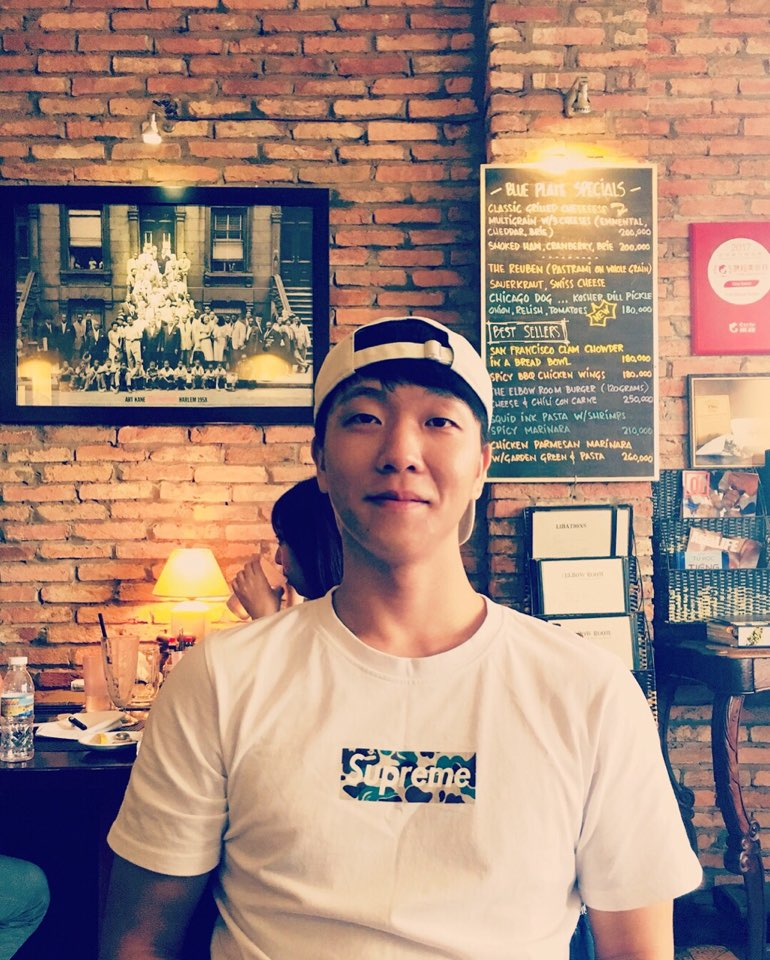

Sean Kim
Conatct : sean.kim84@gmail.com
Biography
Hellow my name is Sean.Kim, Korean name is Hyeon Gyu Kim. Good to see you.
The world is wide, and life is short. This lesson learned while traveling has driven my life; I have decided not to fear change.
I have taught myself but have leared more collaboratively. Eager to meet other student developers.
My passiong for cultivating my career as a developer has broadened my practical experience throughout my global journey.
Now I look forward to continuing this journey in college to attain profound theoretical usderstandings of Computer Science.